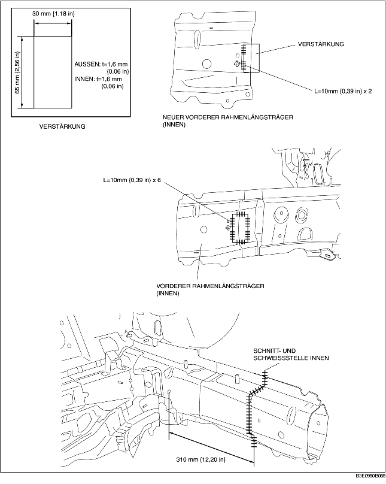
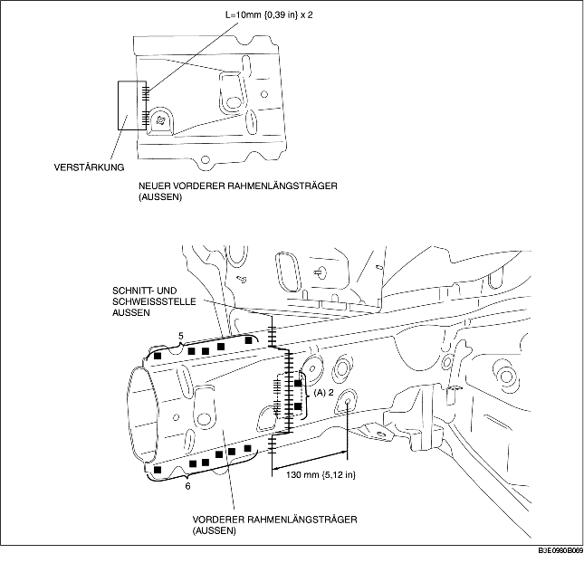

1. Unter Verwendung des Materials des vorderen Rahmenlängsträgers ein Verstärkungsblech fertigen.
2. Um die neuen und vorhandenen Teile zu schneiden und anzuschweißen, an den in der nachfolgenden Abbildung für die neuen Teile illustrierten Stellen schneiden und die Schnitt- und Schweißstelle, wo die neuen und alten Teile zusammenkommen, abschrägen.
3. Beim Einbau neuer Teile, zuerst die neuen und vorhandenen Teile probeweise einbauen und danach das Chassis entsprechend der Standardabmessungen messen und einstellen.
4. Um das innere Blech einzubauen, die neuen und vorhandenen Teile provisorisch miteinander verbinden, die vorhandenen Teile und die Verstärkung schweißen und dann die neuen und vorhandenen Teile stumpfschweißen.
5. Da das äußere Blech nicht von der Rahmeninnenseite her an den vorhandenen Teilen angeschweißt werden kann, 2 Schweißlöcher an den mit (A) gekennzeichneten Stellen in die vorhandenen Teile bohren. Die Verstärkung und die vorhandenen Teile durch Lochschweißung von der Außenseite des Rahmens aus einbauen, dann die neuen und vorhandenen Teile stumpfschweißen.
6. Die Oberfläche jeder stumpfgeschweißter Stelle, innen und außen, mit einem Tellerschleifer abschleifen.

